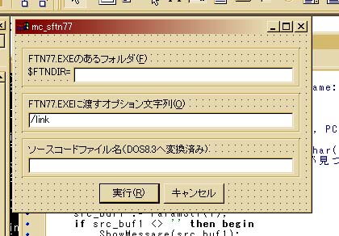

トップページ＞＞＞「ぷろぐらみんぐ」目次
mc_sftn77開発日誌
初版作成：2002/11/16
二版作成：2002/11/19
- 前書き
- 本題
- 後書き或いは感想
Salford Fortran77を導入してみたはよいのだが。詳細は口述するが、とにかくCeta Ver2.50では、外部プログラムを呼び出すときの引数を渡す際の仕様上、ftn77.exeにソースコードファイル名が正常に認識されないことが判明した。
Ceta側を作り替えるのは(Fortranのみのせいでそのような羽目に陥るのは)避けたい。
そこで、直接ftn77を呼ぶのではなく、仕様上の違いを吸収するプログラムを間に挟むことにした。それがmc_sftn77(Module of Ceta for Salford Fortran 77)である。
目次に戻る
- (2002/11/16)Salford Fortran 77 の動き
- (2002/11/16)GetShortPathName()とstring→PCharの話
- (2002/11/19)PChar→stringと文字列の連結とか。
(2002/11/16)Salford Fortran 77 の動き
「本題」に戻る
Salford Fortran 77(以下、sftn77と表記)は個人使用に限ったFortranコンパイラである。Salfordのサイトに行けば商用で使えるような便利なIDE付きのものも購入できるようだ。たかがフリーのコンパイラごときで「セットアッププログラム」でちゃっかりレジストリ使う点を除けば便利であろう。もっとも、展開したファイルをコピーするだけでも別のマシンで動かせるので、レジストリに関しては「インストールしましたよ。」と書き込むだけで、とりわけ中枢プログラムが使うわけでもないようだ。
まあ、とにかくセットアッププログラムを動かせばPATHにftn77.exeというコンパイラが入っているフォルダが追加される。それだけで利用可能になる。
Cetaでもできるか・・・と試してみたが。何度試してもうまくいかない。PATHがおかしいらしい。困った。しょうがないので、.BATファイルで以下の内容をこしらえ、こいつでラッパーさせてみた。
set PATH=C:\Origin\salford
echo %1
ftn77.exe %1
slink.exe %1.obj
DOSコマンドライン上からはこれでうまくいく。ちなみに、/linkオプションをftn77.exeの方につければslink.exeまで自動化してくれる。
ところが、Cetaからはやっぱりうまくいかない。んで、ようやく原因が判明したのが以下のエラー。
*** File ""c:\origin\test.for"" does not exist
ん？・・・ファイル名は渡されているが・・・何で""（ダブルクォーテーション）が二重についてるんだ？普通、ファイルが存在しないとかは""の一重で済むはず。
待てよ。確か、Cetaはロングファイル名を正常に渡すために、""で囲んでから引数となるファイルを渡すようにしている。ということは。
ftn77.exe側がロングファイル名、特に""で囲まれたファイル名に対応していない。ということかも。
ということで、DOS窓ではうざいのでCygwinのrxvt-win32.exe上でいろいろロングファイル名に対するftn77.exeの反応を探ってみました。
ファイル名：C:\Program Files\test.for
実験１：Cetaと同様の渡し方
[Administrator@KOTETSU Program Files]$ ftn77 "C:\Program Files\test.for"
[Salford FTN77/Win32 v4.03, Copyright (c) Salford Software Ltd. 1988-1998]
Licensed to: FTN77 Personal Edition
Department: Non-commercial use only
*** File ""c:\program files\test.for"" does not exist
*** Compilation failed
・・・見事に（じゃないが）Cetaと同様のエラーを吐き出してコンパイル失敗。
実験２：\(エスケープ)使って長いまま包まず指定
[Administrator@KOTETSU Program Files]$ ftn77 C:\Program\ Files\test.for
[Salford FTN77/Win32 v4.03, Copyright (c) Salford Software Ltd. 1988-1998]
Licensed to: FTN77 Personal Edition
Department: Non-commercial use only
*** File ""c:program filestest.for"" does not exist
*** Compilation failed
・・・これまた見事に失敗。
実験３：これでどうだ？包まないけどDOS8.3形式ショートファイル名
[Administrator@KOTETSU Program Files]$ ftn77 C:\Progra~1\test.for
[Salford FTN77/Win32 v4.03, Copyright (c) Salford Software Ltd. 1988-1998]
Licensed to: FTN77 Personal Edition
Department: Non-commercial use only
*** File "c:progra~1test.for" does not exist
*** Compilation failed
・・・ううん。まだ駄目みたいですね。直接はやっぱまずいみたいです。\がエスケープされてしまってますねえ。
実験４：今度こそ！包んだ上でのDOS8.3形式ショートファイル名
[Administrator@KOTETSU Program Files]$ ftn77 "C:\Progra~1\test.for"
[Salford FTN77/Win32 v4.03, Copyright (c) Salford Software Ltd. 1988-1998]
Licensed to: FTN77 Personal Edition
Department: Non-commercial use only
NO ERRORS [FTN77 Ver 4.03]
・・・成功！！ぐへへ。これで大体の目処が付きました。
つまりですね。ラッパープログラムとしては大体以下の動作をしてくれればいいわけです。
１．とにかくCetaから渡されてきたロングファイル名をGetShortPathNameというWin32APIでショートファイル名に変換します。んでもってこいつを""で包んであげます。
２．オプション入力欄をもうけたDLGを表示。デフォルトで「/link」を設定済みにしておき、ユーザーのカスタマイズ性をある程度残す。
３．これだとftn77.exeのパス設定ができないので、Ceta側で環境変数に「FTNDIR」を設定しておき、これを取り出して「ftn77.exe」と連結してftn77.exeのフルパスファイル名を取得する。ついでにftn77.exeを起動するときの環境変数のPATHにも使い回す。
・・・と、まあこんな具合で。設計途中のスナップショットがこいつ↓

後は中身を書いていくだけ。
参考資料
無し
(2002/11/16)GetShortPathName()とstring→PCharの話
「本題」に戻る
さて。何故開発をDelphiで始めてしまったのかという疑問はぐっと抑えて。
んでえ。さっき見せたような画面構成です。んで、OnShow関数の時に環境変数とってこさせたり、ショートファイル名作ってEditに表示したりさせるです。
環境変数を取得する部分は以下のコードです。これ、後でCetaからテストする必要があります。未検証。
var
i: DWORD;
fd_ebuf: array[0..MAXSIZE] of char;
begin
i := GetEnvironmentVariable('FTNDIR',@fd_ebuf,SizeOf(fd_ebuf));
e_ftndir.Text := fd_ebuf;
e_ftndirというのが$FTNDIR=に続くEditですね。
問題はGetShortPathNameで起こりました。これに関しては自分でも一時間ほど何とかしようとがんばり、結局どうにか作れました。んで、Delphiの実行時引数オプションで適当な存在しないロングファイル名を渡すようにしておいて、やってみたらうまくいかない。
さては自分で作ったのが不味いのか・・・と思い、DelphiTipsに載っていたのを１０分で探して適用してみます。が。やっぱりうまくいかない・・・。
var
src_buf1: string;
src_buf2: array[0..MAXSIZE] of char;
src_buf3: string;
begin
src_buf1 := ParamStr(1);
if src_buf1 <> '' then begin
ShowMessage(src_buf1);
i := GetShortPathName(PChar(src_buf1),PChar(src_buf3),0);
SetLength(src_buf3,i);
ShowMessage(IntToStr(i));
GetShortPathName(PChar(src_buf1),PChar(src_buf3),i);
GetShortPathName(PChar(src_buf1),@src_buf2,1024);
e_srcfile.Text := src_buf2;
ShowMessage(src_buf1);
end;
自力で作った部分とDelphi Tipsを参考にしたのがごちゃ混ぜですが勘弁してください。基本的にsrc_buf2のarray of charしたのが自力でトライした方で、src_buf3でSetLengthしてるのがDelphi Tips参考にした方です。
んで。原因はしばらくして分かりました。
「存在しないファイル名」を渡したのがいけませんでした。
というのは、うまくいかない現象として最初のShowMessage(src_buf1)は正常に表示されているのにGetShortPathName()だけが両方とも訳の分からない文字列になっている。しかも、i := がゼロになっている。
これはもしや、存在しないファイル名を渡されたのでシステムから引くことができずゼロが返されているのでは？
と思いまして、実在するファイル名を渡したらあっけなく正常に返ってきました。GetShortPathNameは単に文字列を適当に変換しているだけではなかったみたいです。
余談：原因を見つけた糸口。例えば、C:\Program Files\は短くするとC:\Progra~1\になります。半角空白や、7文字目は~(チルダ)で置換されるわけです。で、最後につく数字が今回の糸口でした。この数字は、「6文字目までが同じファイル名が複数同じディレクトリに存在したとき何番目にあたるかを表す」みたいなものなんです。ここで、「ん？ということはいったんはロングファイル名で調べるわけだから、存在しないファイル名とかが渡されてきた場合調べようがないんじゃ・・・？」と考えて、原因に思い当たったわけです。
まあ、そんなわけでとにかくGetShortPathNameに関しては一段落です。
ただ、Delphi Tipsの方が動的に確保しているので安全です。自力でやったのはDelphiのヘルプに載っていたのを参考にしました。MAXSIZEには1024がconst MAXSIZE=1024;として指定しました。FileSystem上は1024文字あれば十分なはずですが、まあ勉強です。Delphi Tipsを採用しましょう。実際、これはCだとmallocかGlobalAlloc使うわけでちとめんどくさくなる部分ですし。
最終的なFormShowプロシージャです。
procedure TForm1.FormShow(Sender: TObject);
var
i: DWORD;
fd_ebuf: array[0..MAXSIZE] of char;
src_buf1: string;
src_buf2: string;
begin
i := GetEnvironmentVariable('FTNDIR',@fd_ebuf,SizeOf(fd_ebuf));
e_ftndir.Text := fd_ebuf;
src_buf1 := ParamStr(1);
if src_buf1 <> '' then begin
i := GetShortPathName(PChar(src_buf1),PChar(src_buf2),0);
SetLength(src_buf2,i);
GetShortPathName(PChar(src_buf1),PChar(src_buf2),i);
e_srcfile.Text := src_buf2;
end;
end;
(2002/11/19)PChar→stringと文字列の連結とか。
「本題」に戻る
・・・さて。後はCetaのC++のソースコードで書かれているCreateProcess周りをPascalに持ち込めばよいだけである。まあ、いろいろ大変だったけれど。DelphiTips等を助けにしていろいろ貴重な勉強をしつつ移植できました。
が。やっぱりうまくいかない。以下のエラーがどうしても出力されてしまう。
C:\Origin>"C:\Origin\salford\ftn77.exe"
Cannot open authorisation file \ftn77.ser:
System error (2): 指定されたファイルが見つかりません。
なんじゃこりゃ？これ、Cetaでも発生したエラーである。ホントどうなってるんだ・・・と思ったのですが。はたと思いつきましたよ。上の例、すでに何となく原因が分かり始めていて、それの検証として打ち込んだコマンドと結果なのです。それは。ほれ、実行ファイルが""で囲まれてます。これはCetaの動作と全く同じにした場合どうなるかをDOS上で確認したわけですが。
Cannot openのファイル、\ftn77.ser。これ、\だけなんて変ですよね。そこで、さっきのソースコードのお話でもあったように、「ひょっとしてダブルクォーテーションがあると不味いのでは・・・」に思い至ったわけです。
というわけで。とにかくダブルクォーテーションを外したコマンドラインを生成する羽目になりました。が。ここでちょっと躓きました。
躓いていたコードを示します。
var
{コマンドライン文字列、環境変数文字列、標準出力ファイル名 }
cmd_buf,env_buf,err_buf: string;
_cmd_buf: string; //GetShortPathNameのための一時バッファ
（省略）
begin
{ コマンドライン文字列の生成 }
i := GetShortPathName(PChar(e_ftndir.Text + '\' + FTNCMD),PChar(_cmd_buf),0);
SetLength(_cmd_buf,i);
GetShortPathName(PChar(e_ftndir.Text + '\' + FTNCMD),PChar(_cmd_buf),i);
ShowMessage(_cmd_buf);
cmd_buf := _cmd_buf + ' ' + e_ftnoption.Text + ' ' + e_srcfile.Text;
いろいろShowMessage入れたり、'"'挟んだり四苦八苦したのですが。'"'は意味無しで、ShowMessageで調べても、どうしても' ' + ...が正常に代入されない。
結局ShowMessage(cmd_buf)して表示されるのは、ショートファイル名になった_cmd_bufのみ。何なんだ。というわけで、丸三日（といっても全部で５時間くらいかな？）悩みつづけ。Delphi5オフィシャルコースウェア応用編まで購入して調べます。が、どうも載っていない。
ただ、オフィシャルコースウェアの文字列部分を読んでいて気づいたのですが、string文字列型へPChar型を代入することは「=」演算子については記述があります。しかし+演算子については記述がないんです。またDelphiの「Object Pascal 言語ガイド」を見てみても、確かに「+」演算子は全ての文字列型でサポートされている、とは書かれているのですが、いまいち説明が足りない感触です。例や、極端に奇妙なケースについての言及がなかったりして参考になりません。
結局・・・C言語で、安全な文字列の代入に使われやすいsprintfと似た働きの、SysUtilsユニットのFormat関数を使うことにしました。cmd_bufへの代入部分はこのように変更されました。
cmd_buf := Format('%s %s %s',[PChar(_cmd_buf),PChar(e_ftnoption.Text),PChar(e_srcfile.Text)]);
これでようやく完全に動きました！！イヤー長かったー。
というわけで。お待たせしました。Ceta＆Salford Fortran 77専用ラッパープログラム「mc_sftn77」、ついにVer 0.11登場です！
目次に戻る
ちょっと躓いたところもありましたが、どうにかDelphiを使った最初のプログラミングをかなり幸福な形で完成させることができました。学校の情報処理概論という授業で、プログラミングの紹介といった形でPascalのさわりだけを体験したのが３年前ですか。長いことご無沙汰していましたが、アスキー出版局の「Delphi5オフィシャルコースウェア」シリーズのおかげで何とかスタートラインに着くことができそうです。
まだまだDelphiは初心者ではありますが、オフィシャルコースウェアの「応用編」をじっくりと読みこなしてDelphi、やがてはBuilderを思う存分いじくり回せるようになりたいものです。
ちまたにはDelphiやBuilderの解説書がだいぶあふれていますが、とにかく「オフィシャルコースウェア」を読まないことには扱えないと思います。それも「応用編」まで読み込まないと、BuilderやDelphiの良さを生かし切れません。というのも、コンポーネントの作成方法やDLLなど、Windowsとの連携部分に関しては基礎編には載っていませんし、マニュアルを参照しても分厚すぎます。また、ヘルプを参照するのも画面を見つつで苦痛なんです。そういうわけで、もっと早く「応用編」をBuilderなりDelphiなりで買っておけばCetaとかで無用なトラブルに悩まされなかったのに。と激しく後悔していたり。まあ、まだまだ勉強し直せる（たぶん）のですから、がんばりますです。
ちょっとヘルプを引いてみれば実感できると思うのですが、Borlandの提供しているヘルプ（特にサンプルコードとか）って、あまりにも「見れば分かるだろ」的な部分が多い（特にVCLヘルプ）。もっと境界的というか、クリティカルというか、「こいつはどうだ！？」的な「キワモノサンプル」や記述がない。というわけで、ずいぶん物足りない思いをするのです。そういったときに早めにDelphi Tipsなり、「オフィシャルコースウェア」なりを引いてみると以外とあっけなく見つかったり。
まあ、そんなモンなんでしょう。
というわけで、今回はこれでお仕舞い。おつきあいいただきありがとうございました。
目次に戻る
トップページ＞＞＞「ぷろぐらみんぐ」目次